Aula 08 Conceitos de Orientação a Objetos
Arquivo original: Aula 08 Conceitos de Orientação a Objetos.pdf
Página 1
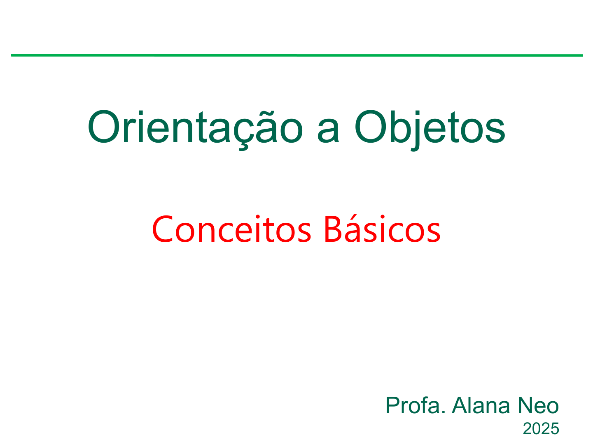
Orientação a Objetos
Conceitos Básicos
Profa. Alana Neo
2025Página 2
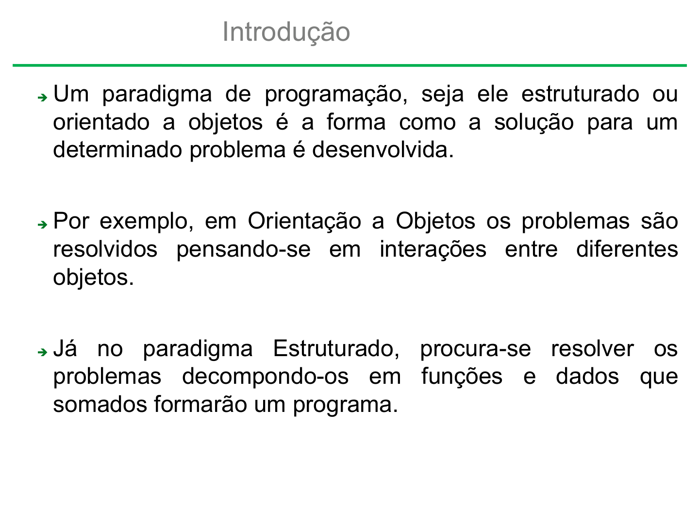
Introdução
➔Um paradigma de programação, seja ele estruturado ou orientado a objetos é a forma como a solução para um determinado problema é desenvolvida.
➔Por exemplo, em Orientação a Objetos os problemas são resolvidos pensando-se em interações entre diferentes objetos.
➔Já no paradigma Estruturado, procura-se resolver os problemas decompondo-os em funções e dados que somados formarão um programa.
Página 3
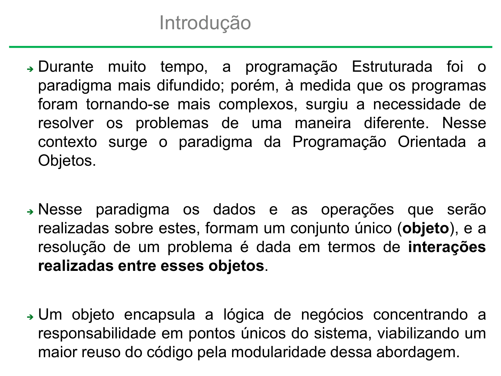
Introdução
➔Durante muito tempo, a programação Estruturada foi o paradigma mais difundido; porém, à medida que os programas foram tornando-se mais complexos, surgiu a necessidade de resolver os problemas de uma maneira diferente. Nesse contexto surge o paradigma da Programação Orientada a Objetos.
➔Nesse paradigma os dados e as operações que serão realizadas sobre estes, formam um conjunto único (objeto), e a resolução de um problema é dada em termos de interações realizadas entre esses objetos.
➔Um objeto encapsula a lógica de negócios concentrando a responsabilidade em pontos únicos do sistema, viabilizando um maior reuso do código pela modularidade dessa abordagem.
Página 4
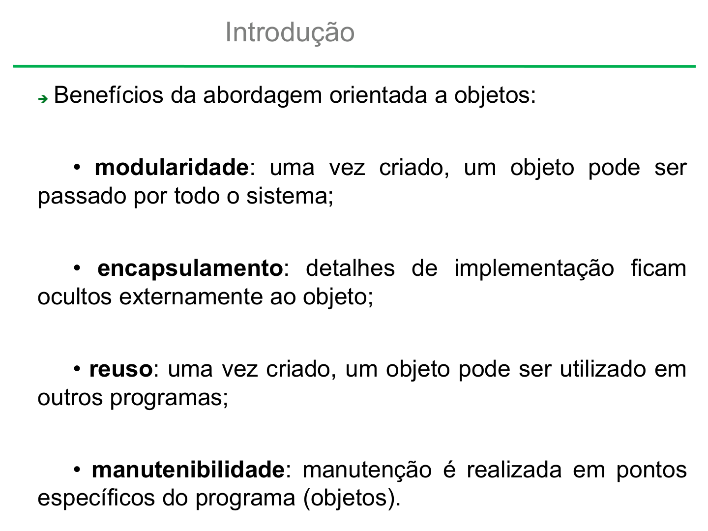
Introdução
➔Benefícios da abordagem orientada a objetos:
• modularidade: uma vez criado, um objeto pode serpassado por todo o sistema;
• encapsulamento: detalhes de implementação ficamocultos externamente ao objeto;
• reuso: uma vez criado, um objeto pode ser utilizado emoutros programas;
• manutenibilidade: manutenção é realizada em pontosespecíficos do programa (objetos).
Página 5
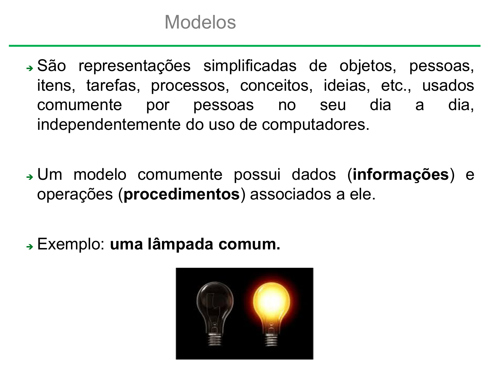
Modelos
➔São representações simplificadas de objetos, pessoas, itens, tarefas, processos, conceitos, ideias, etc., usados comumente por pessoas no seu dia a dia, independentemente do uso de computadores.
➔Um modelo comumente possui dados (informações) e operações (procedimentos) associados a ele.
➔Exemplo: uma lâmpada comum.
Página 6
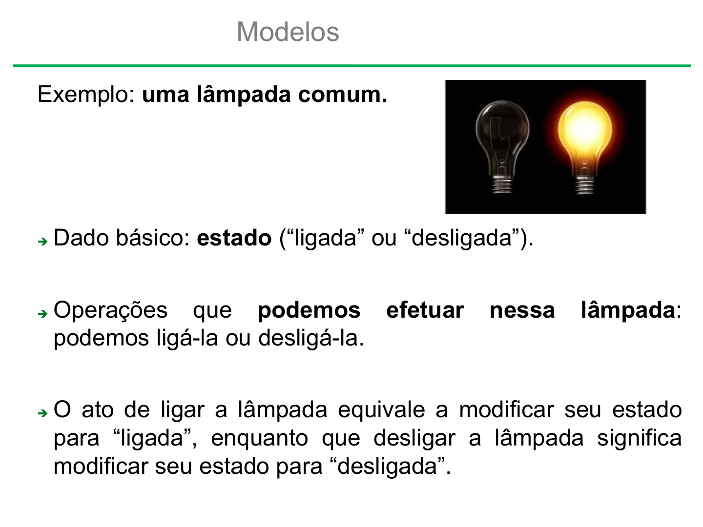
Modelos
Exemplo: uma lâmpada comum.
➔Dado básico: estado (“ligada” ou “desligada”).
➔Operações que podemos efetuar nessa lâmpada: podemos ligá-la ou desligá-la.
➔O ato de ligar a lâmpada equivale a modificar seu estado para “ligada”, enquanto que desligar a lâmpada significa modificar seu estado para “desligada”.
Página 7
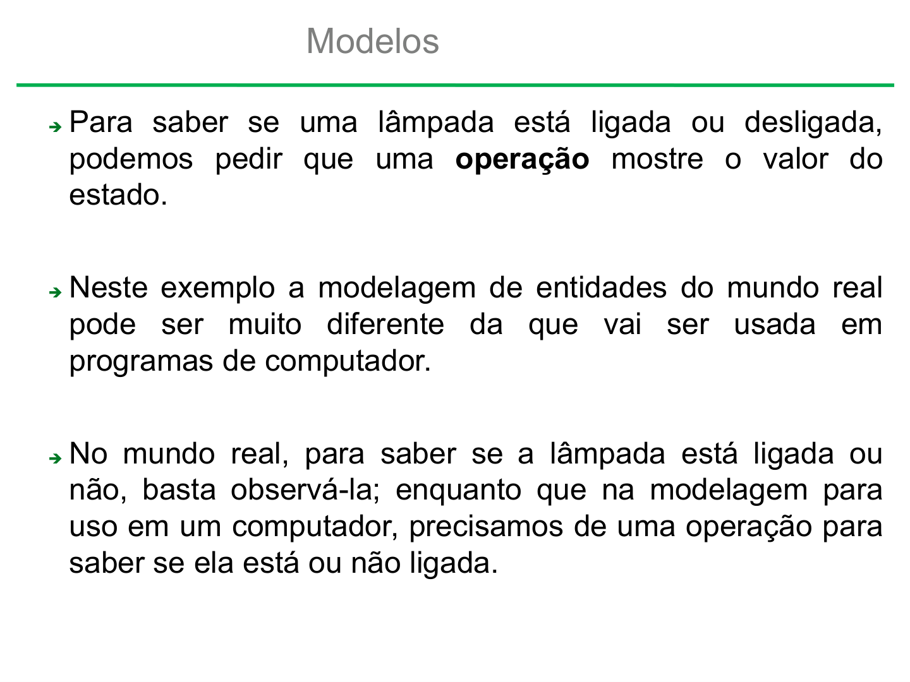
Modelos
➔Para saber se uma lâmpada está ligada ou desligada, podemos pedir que uma operação mostre o valor do estado.
➔Neste exemplo a modelagem de entidades do mundo real pode ser muito diferente da que vai ser usada em programas de computador.
➔No mundo real, para saber se a lâmpada está ligada ou não, basta observá-la; enquanto que na modelagem para uso em um computador, precisamos de uma operação para saber se ela está ou não ligada.
Página 8
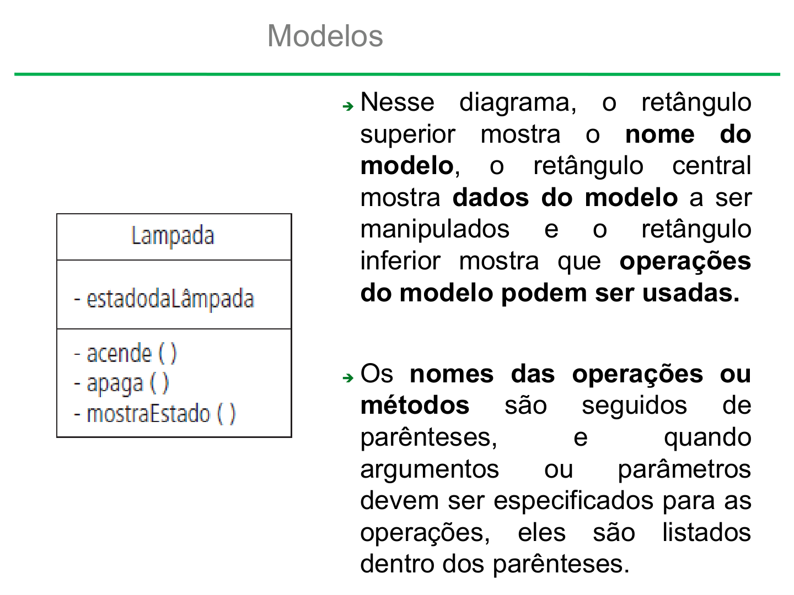
Modelos
➔Nesse diagrama, o retângulo
superior mostra o nome do
modelo, o retângulo central
mostra dados do modelo a ser
manipulados e o retângulo
inferior mostra que operações
do modelo podem ser usadas.
➔Os nomes das operações ou
métodos são seguidos de
parênteses, e quando
argumentos ou parâmetros
devem ser especificados para as
operações, eles são listados
dentro dos parênteses.Página 9
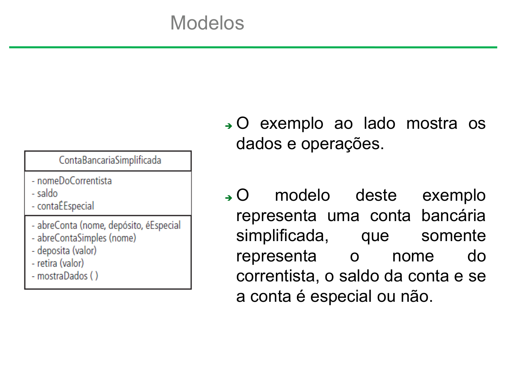
Modelos
➔O exemplo ao lado mostra os
dados e operações.
➔O modelo deste exemplo
representa uma conta bancária
simplificada, que somente
representa o nome do
correntista, o saldo da conta e se
a conta é especial ou não.Página 10
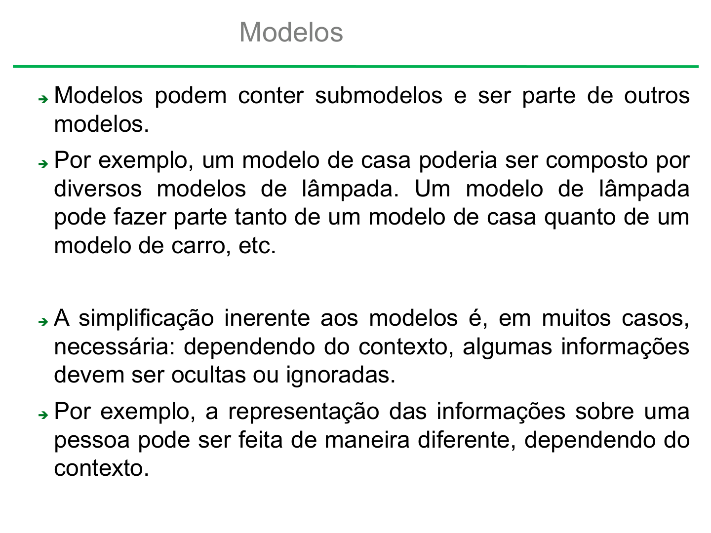
Modelos
➔Modelos podem conter submodelos e ser parte de outros modelos. ➔Por exemplo, um modelo de casa poderia ser composto por diversos modelos de lâmpada. Um modelo de lâmpada pode fazer parte tanto de um modelo de casa quanto de um modelo de carro, etc.
➔A simplificação inerente aos modelos é, em muitos casos, necessária: dependendo do contexto, algumas informações devem ser ocultas ou ignoradas. ➔Por exemplo, a representação das informações sobre uma pessoa pode ser feita de maneira diferente, dependendo do contexto.
Página 11
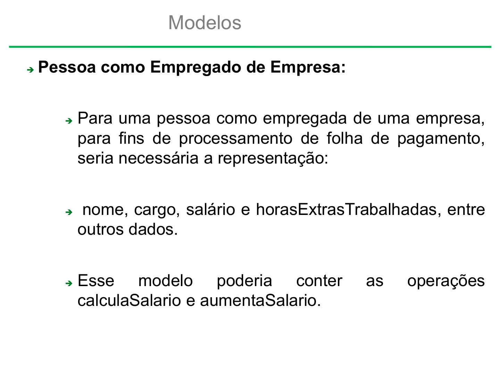
Modelos
➔Pessoa como Empregado de Empresa:
➔Para uma pessoa como empregada de uma empresa,
para fins de processamento de folha de pagamento,
seria necessária a representação:
➔nome, cargo, salário e horasExtrasTrabalhadas, entre
outros dados.
➔Esse modelo poderia conter as operações
calculaSalario e aumentaSalario.Página 12
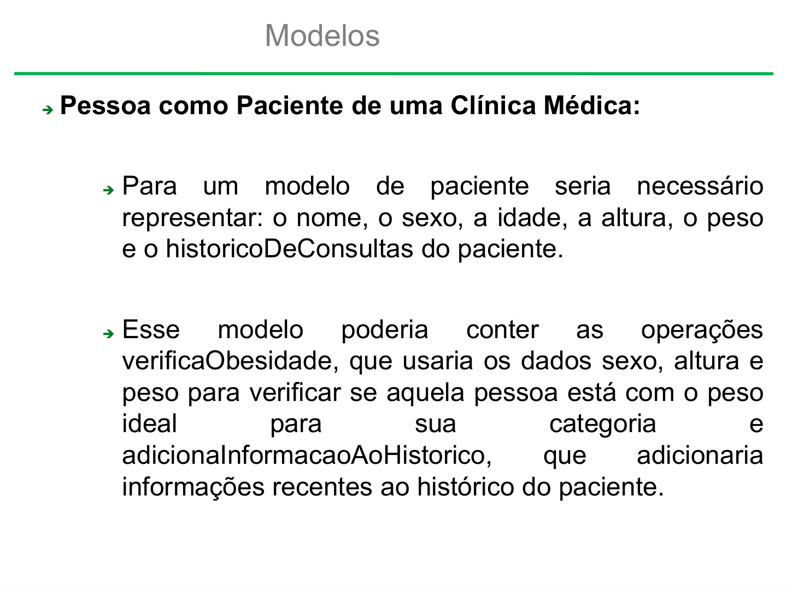
Modelos
➔Pessoa como Paciente de uma Clínica Médica:
➔Para um modelo de paciente seria necessário
representar: o nome, o sexo, a idade, a altura, o peso
e o historicoDeConsultas do paciente.
➔Esse modelo poderia conter as operações
verificaObesidade, que usaria os dados sexo, altura e
peso para verificar se aquela pessoa está com o peso
ideal para sua categoria e
adicionaInformacaoAoHistorico, que adicionaria
informações recentes ao histórico do paciente.Página 13
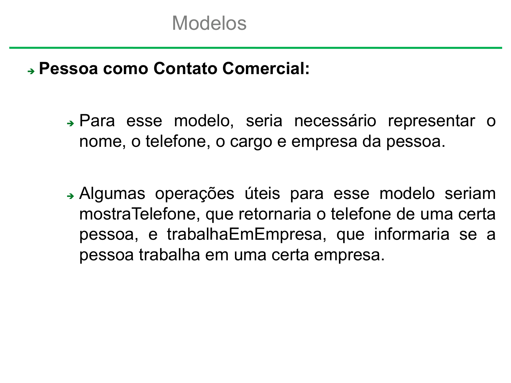
Modelos
➔Pessoa como Contato Comercial:
➔Para esse modelo, seria necessário representar o
nome, o telefone, o cargo e empresa da pessoa.
➔Algumas operações úteis para esse modelo seriam
mostraTelefone, que retornaria o telefone de uma certa
pessoa, e trabalhaEmEmpresa, que informaria se a
pessoa trabalha em uma certa empresa.Página 14
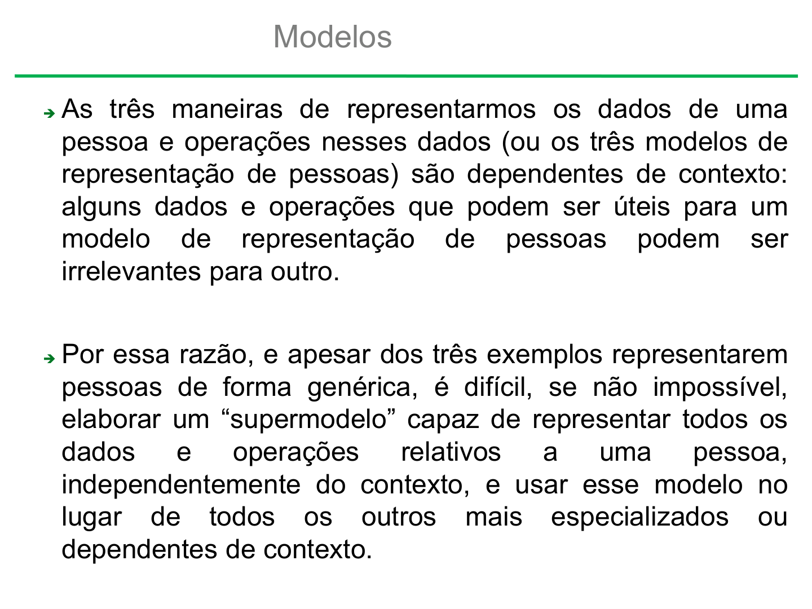
Modelos
➔As três maneiras de representarmos os dados de uma pessoa e operações nesses dados (ou os três modelos de representação de pessoas) são dependentes de contexto: alguns dados e operações que podem ser úteis para um modelo de representação de pessoas podem ser irrelevantes para outro.
➔Por essa razão, e apesar dos três exemplos representarem pessoas de forma genérica, é difícil, se não impossível, elaborar um “supermodelo” capaz de representar todos os dados e operações relativos a uma pessoa, independentemente do contexto, e usar esse modelo no lugar de todos os outros mais especializados ou dependentes de contexto.
Página 15
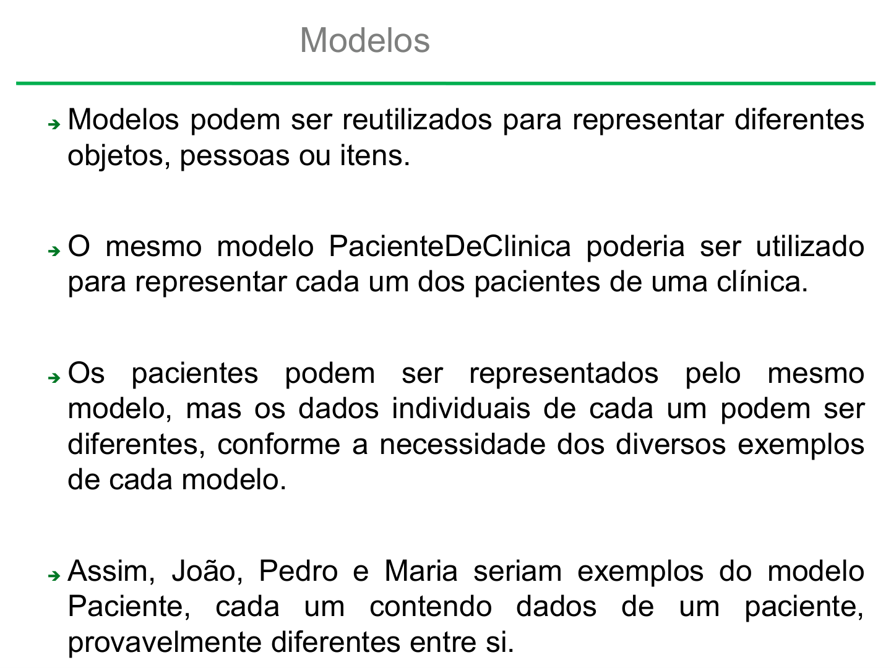
Modelos
➔Modelos podem ser reutilizados para representar diferentes objetos, pessoas ou itens.
➔O mesmo modelo PacienteDeClinica poderia ser utilizado para representar cada um dos pacientes de uma clínica.
➔Os pacientes podem ser representados pelo mesmo modelo, mas os dados individuais de cada um podem ser diferentes, conforme a necessidade dos diversos exemplos de cada modelo.
➔Assim, João, Pedro e Maria seriam exemplos do modelo Paciente, cada um contendo dados de um paciente, provavelmente diferentes entre si.
Página 16
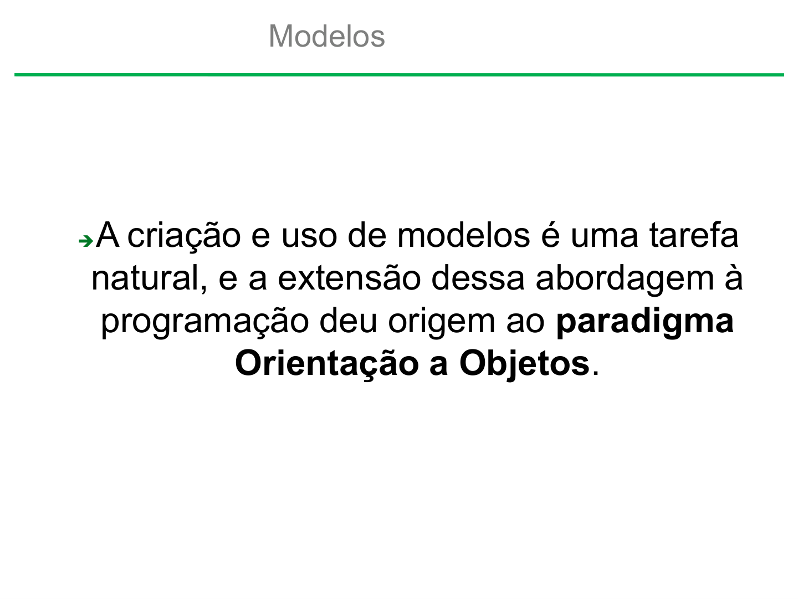
Modelos
➔A criação e uso de modelos é uma tarefa natural, e a extensão dessa abordagem à programação deu origem ao paradigma Orientação a Objetos.
Página 17
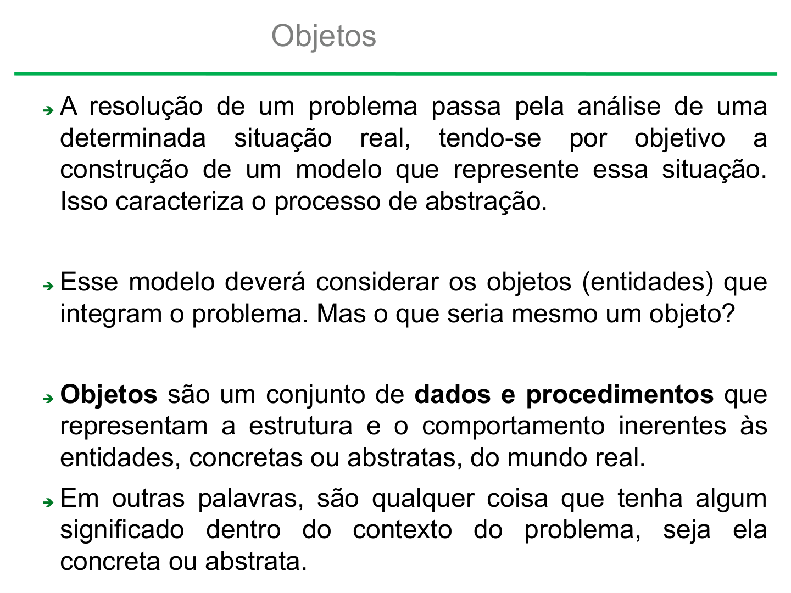
Objetos
➔A resolução de um problema passa pela análise de uma determinada situação real, tendo-se por objetivo a construção de um modelo que represente essa situação. Isso caracteriza o processo de abstração.
➔Esse modelo deverá considerar os objetos (entidades) que integram o problema. Mas o que seria mesmo um objeto?
➔Objetos são um conjunto de dados e procedimentos que representam a estrutura e o comportamento inerentes às entidades, concretas ou abstratas, do mundo real. ➔Em outras palavras, são qualquer coisa que tenha algum significado dentro do contexto do problema, seja ela concreta ou abstrata.
Página 18
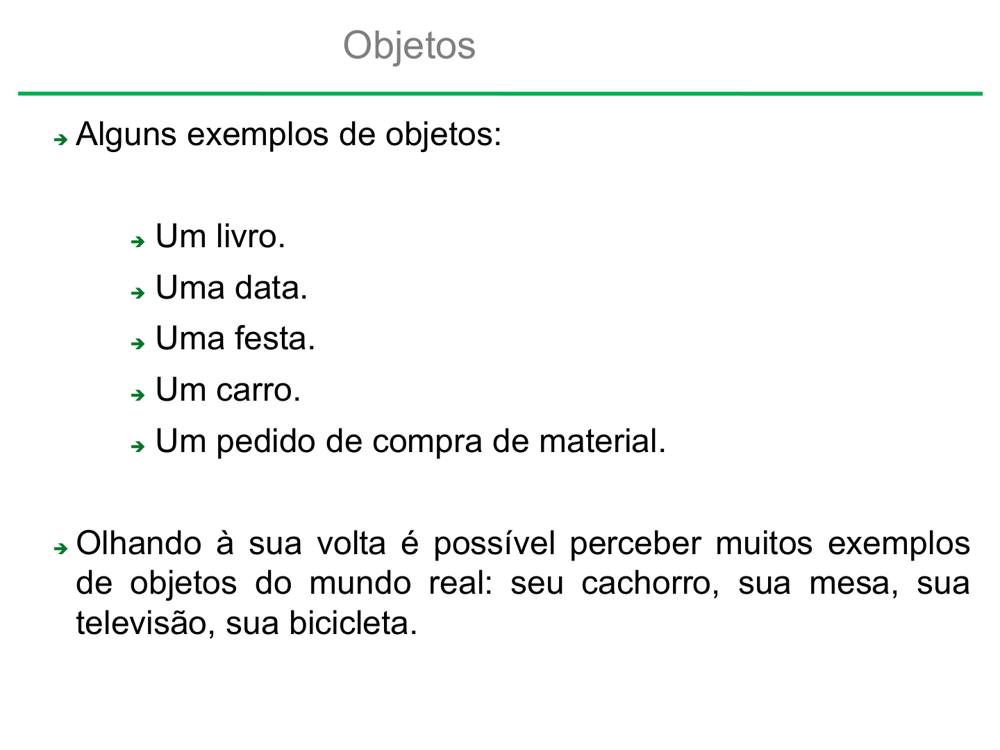
Objetos
➔Alguns exemplos de objetos:
➔Um livro. ➔Uma data. ➔Uma festa. ➔Um carro. ➔Um pedido de compra de material.
➔Olhando à sua volta é possível perceber muitos exemplos de objetos do mundo real: seu cachorro, sua mesa, sua televisão, sua bicicleta.
Página 19
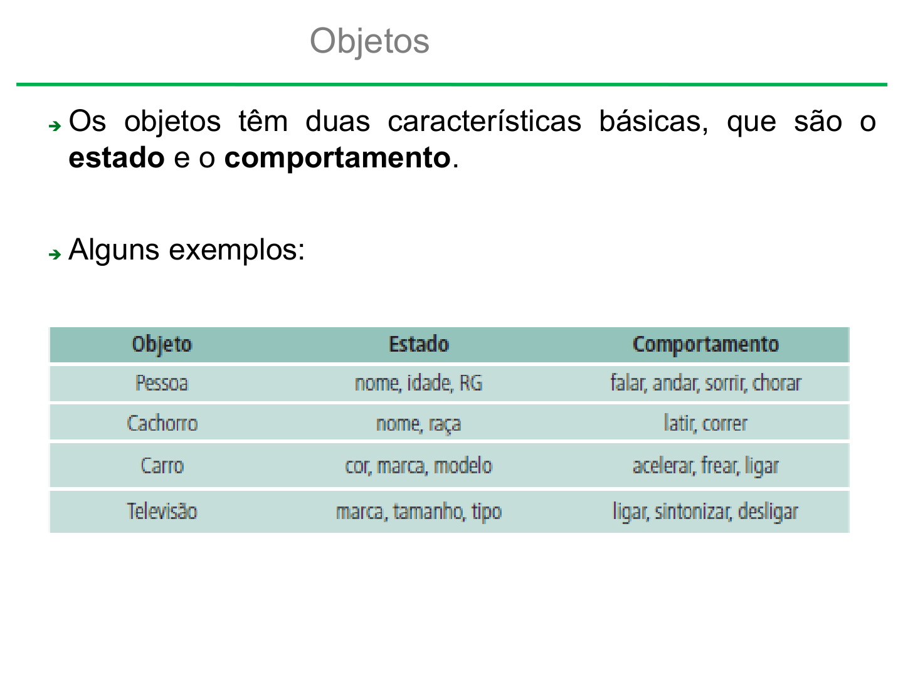
Objetos
➔Os objetos têm duas características básicas, que são o estado e o comportamento.
➔Alguns exemplos:
Página 20
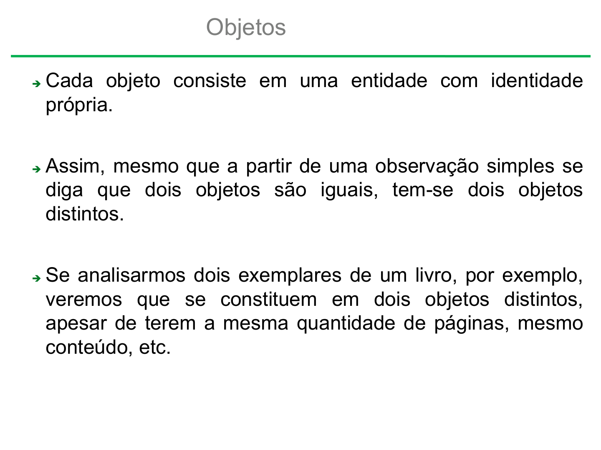
Objetos
➔Cada objeto consiste em uma entidade com identidade própria.
➔Assim, mesmo que a partir de uma observação simples se diga que dois objetos são iguais, tem-se dois objetos distintos.
➔Se analisarmos dois exemplares de um livro, por exemplo, veremos que se constituem em dois objetos distintos, apesar de terem a mesma quantidade de páginas, mesmo conteúdo, etc.
Página 21
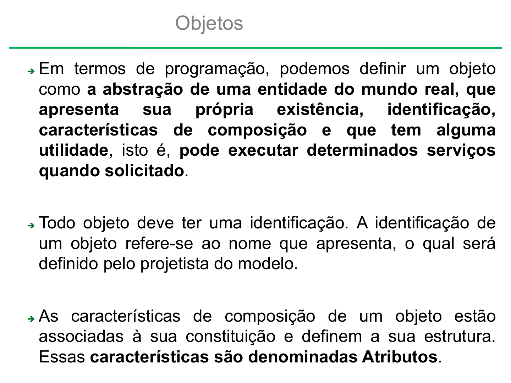
Objetos
➔Em termos de programação, podemos definir um objeto como a abstração de uma entidade do mundo real, que apresenta sua própria existência, identificação, características de composição e que tem alguma utilidade, isto é, pode executar determinados serviços quando solicitado.
➔Todo objeto deve ter uma identificação. A identificação de um objeto refere-se ao nome que apresenta, o qual será definido pelo projetista do modelo.
➔As características de composição de um objeto estão associadas à sua constituição e definem a sua estrutura. Essas características são denominadas Atributos.
Página 22
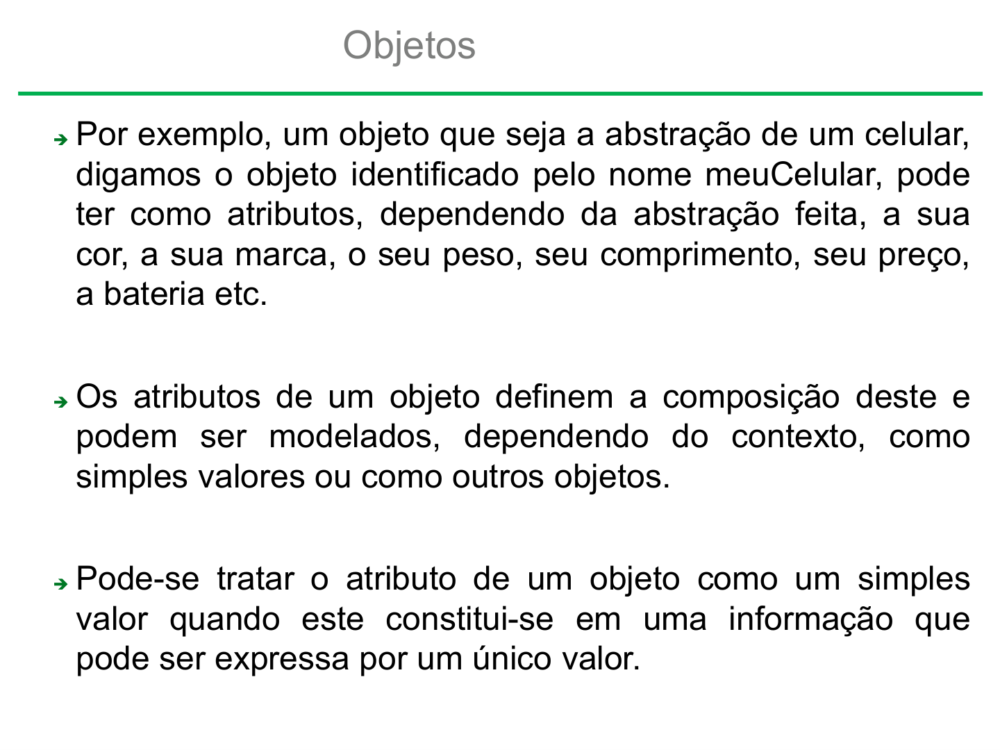
Objetos
➔Por exemplo, um objeto que seja a abstração de um celular, digamos o objeto identificado pelo nome meuCelular, pode ter como atributos, dependendo da abstração feita, a sua cor, a sua marca, o seu peso, seu comprimento, seu preço, a bateria etc.
➔Os atributos de um objeto definem a composição deste e podem ser modelados, dependendo do contexto, como simples valores ou como outros objetos.
➔Pode-se tratar o atributo de um objeto como um simples valor quando este constitui-se em uma informação que pode ser expressa por um único valor.
Página 23
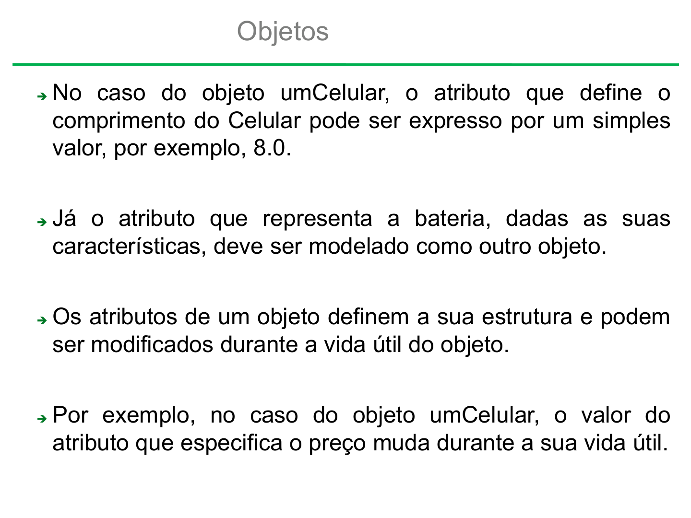
Objetos
➔No caso do objeto umCelular, o atributo que define o comprimento do Celular pode ser expresso por um simples valor, por exemplo, 8.0.
➔Já o atributo que representa a bateria, dadas as suas características, deve ser modelado como outro objeto.
➔Os atributos de um objeto definem a sua estrutura e podem ser modificados durante a vida útil do objeto.
➔Por exemplo, no caso do objeto umCelular, o valor do atributo que especifica o preço muda durante a sua vida útil.
Página 24
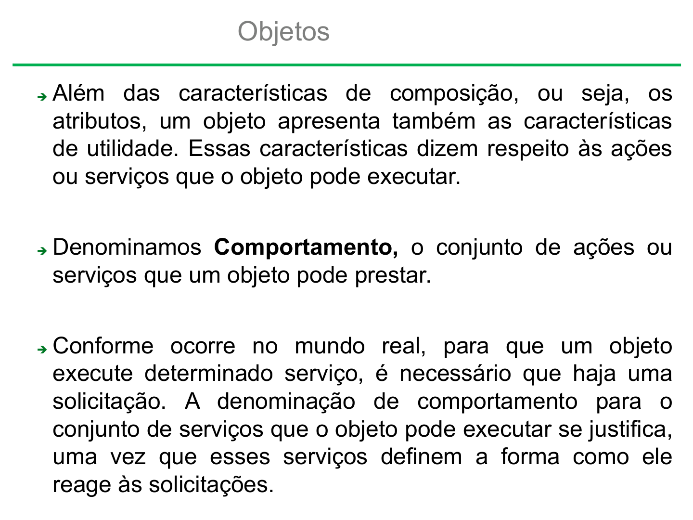
Objetos
➔Além das características de composição, ou seja, os atributos, um objeto apresenta também as características de utilidade. Essas características dizem respeito às ações ou serviços que o objeto pode executar.
➔Denominamos Comportamento, o conjunto de ações ou serviços que um objeto pode prestar.
➔Conforme ocorre no mundo real, para que um objeto execute determinado serviço, é necessário que haja uma solicitação. A denominação de comportamento para o conjunto de serviços que o objeto pode executar se justifica, uma vez que esses serviços definem a forma como ele reage às solicitações.
Página 25
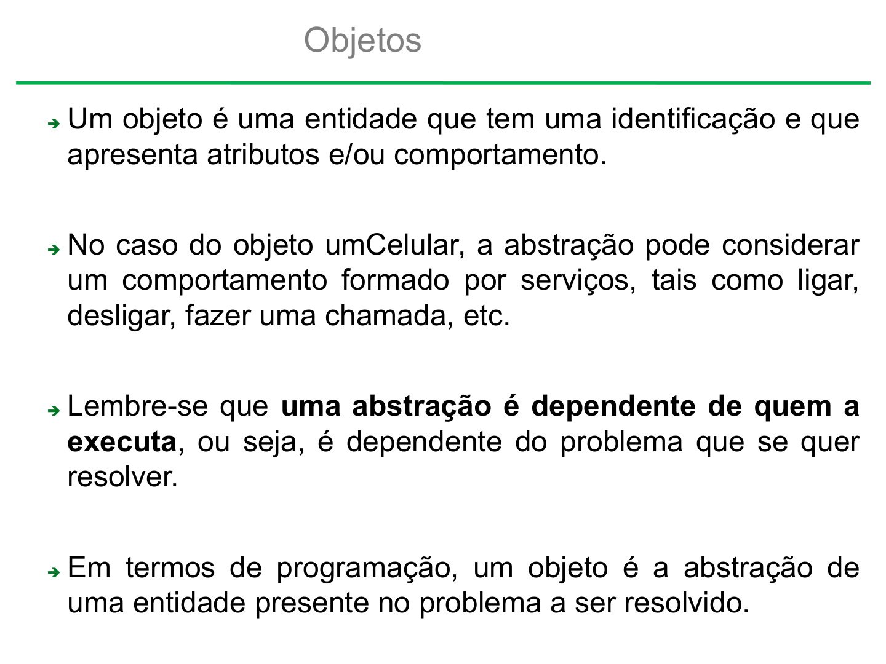
Objetos
➔Um objeto é uma entidade que tem uma identificação e que apresenta atributos e/ou comportamento.
➔No caso do objeto umCelular, a abstração pode considerar um comportamento formado por serviços, tais como ligar, desligar, fazer uma chamada, etc.
➔Lembre-se que uma abstração é dependente de quem a executa, ou seja, é dependente do problema que se quer resolver.
➔Em termos de programação, um objeto é a abstração de uma entidade presente no problema a ser resolvido.
Página 26
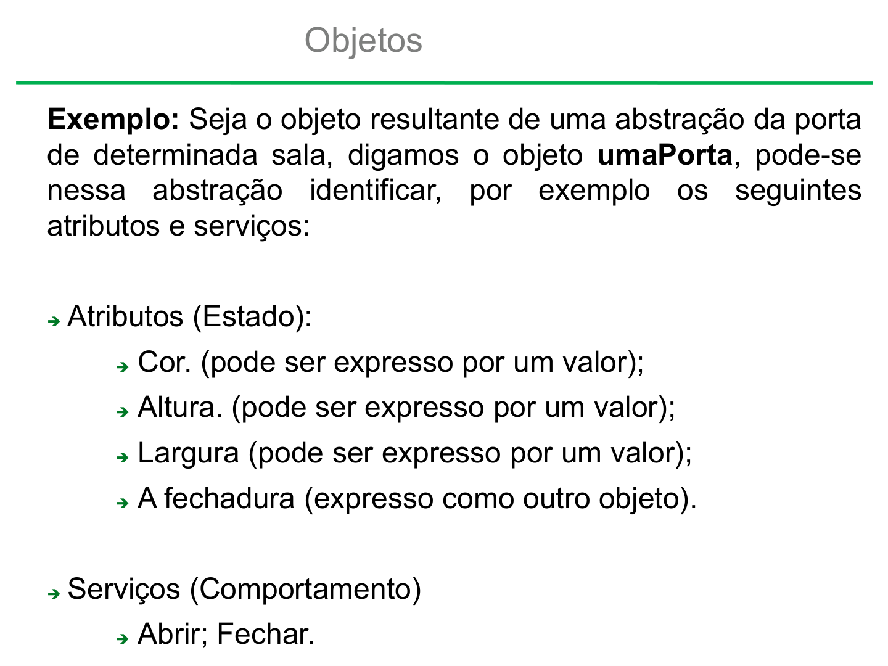
Objetos
Exemplo: Seja o objeto resultante de uma abstração da porta de determinada sala, digamos o objeto umaPorta, pode-se nessa abstração identificar, por exemplo os seguintes atributos e serviços:
➔Atributos (Estado): ➔Cor. (pode ser expresso por um valor); ➔Altura. (pode ser expresso por um valor); ➔Largura (pode ser expresso por um valor); ➔A fechadura (expresso como outro objeto).
➔Serviços (Comportamento) ➔Abrir; Fechar.
Página 27
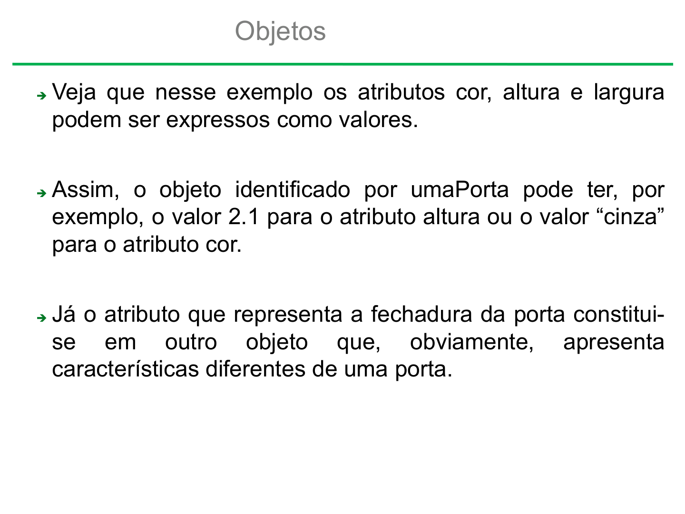
Objetos
➔Veja que nesse exemplo os atributos cor, altura e largura podem ser expressos como valores.
➔Assim, o objeto identificado por umaPorta pode ter, por exemplo, o valor 2.1 para o atributo altura ou o valor “cinza” para o atributo cor.
➔Já o atributo que representa a fechadura da porta constitui- se em outro objeto que, obviamente, apresenta características diferentes de uma porta.
Página 28
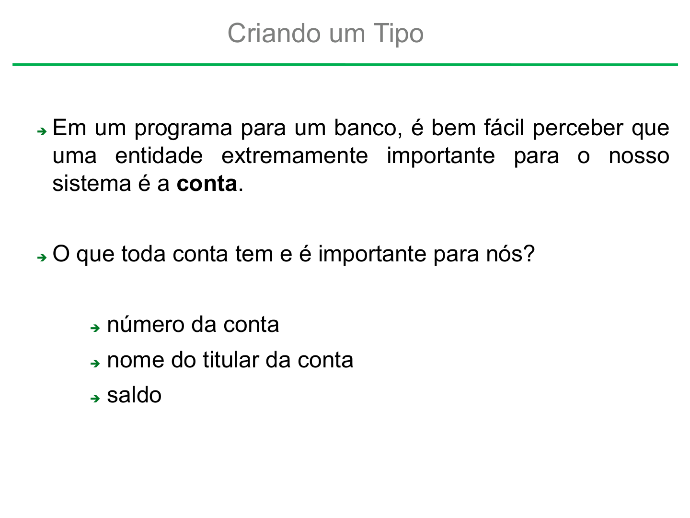
Criando um Tipo
➔Em um programa para um banco, é bem fácil perceber que uma entidade extremamente importante para o nosso sistema é a conta.
➔O que toda conta tem e é importante para nós?
➔número da conta
➔nome do titular da conta
➔saldoPágina 29
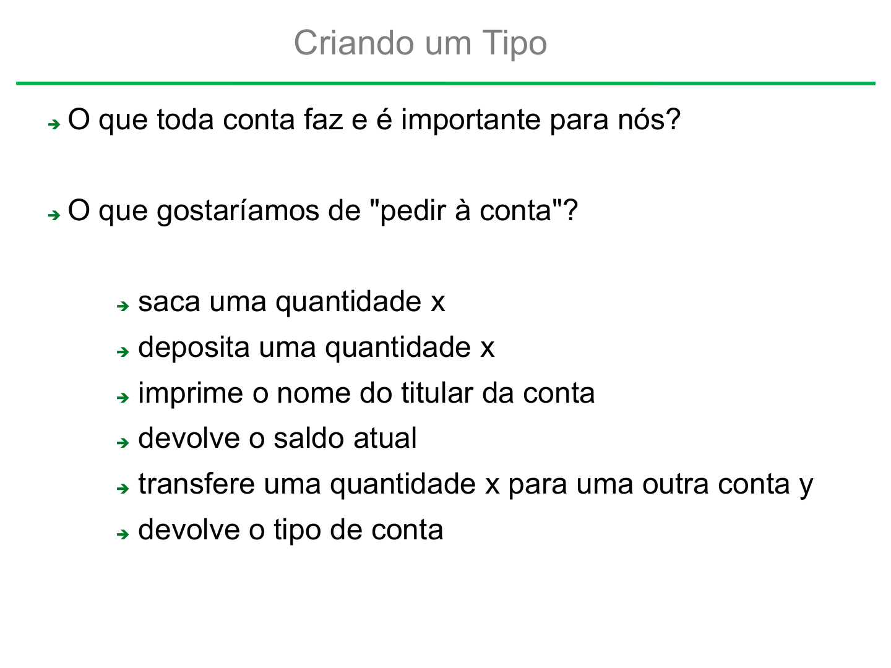
Criando um Tipo
➔O que toda conta faz e é importante para nós?
➔O que gostaríamos de “pedir à conta”?
➔saca uma quantidade x
➔deposita uma quantidade x
➔imprime o nome do titular da conta
➔devolve o saldo atual
➔transfere uma quantidade x para uma outra conta y
➔devolve o tipo de contaPágina 30
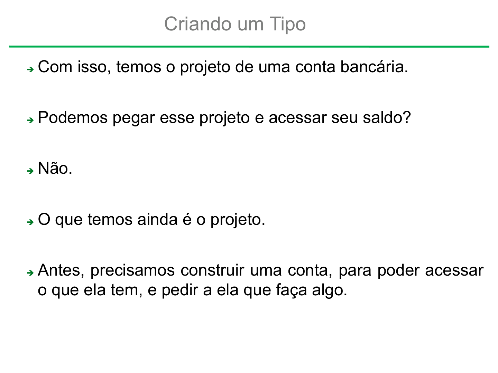
Criando um Tipo
➔Com isso, temos o projeto de uma conta bancária.
➔Podemos pegar esse projeto e acessar seu saldo?
➔Não.
➔O que temos ainda é o projeto.
➔Antes, precisamos construir uma conta, para poder acessar o que ela tem, e pedir a ela que faça algo.
Página 31
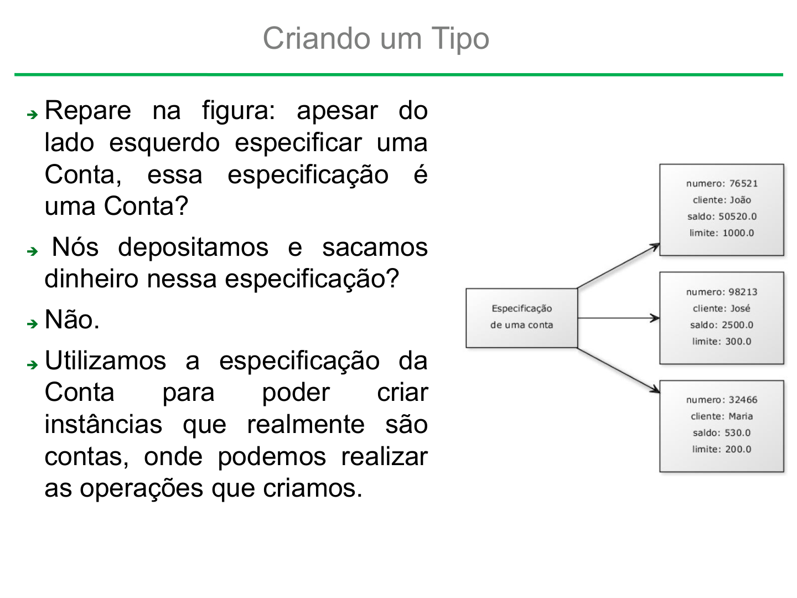
Criando um Tipo
➔Repare na figura: apesar do lado esquerdo especificar uma Conta, essa especificação é uma Conta? ➔Nós depositamos e sacamos dinheiro nessa especificação? ➔Não. ➔Utilizamos a especificação da Conta para poder criar instâncias que realmente são contas, onde podemos realizar as operações que criamos.
Página 32
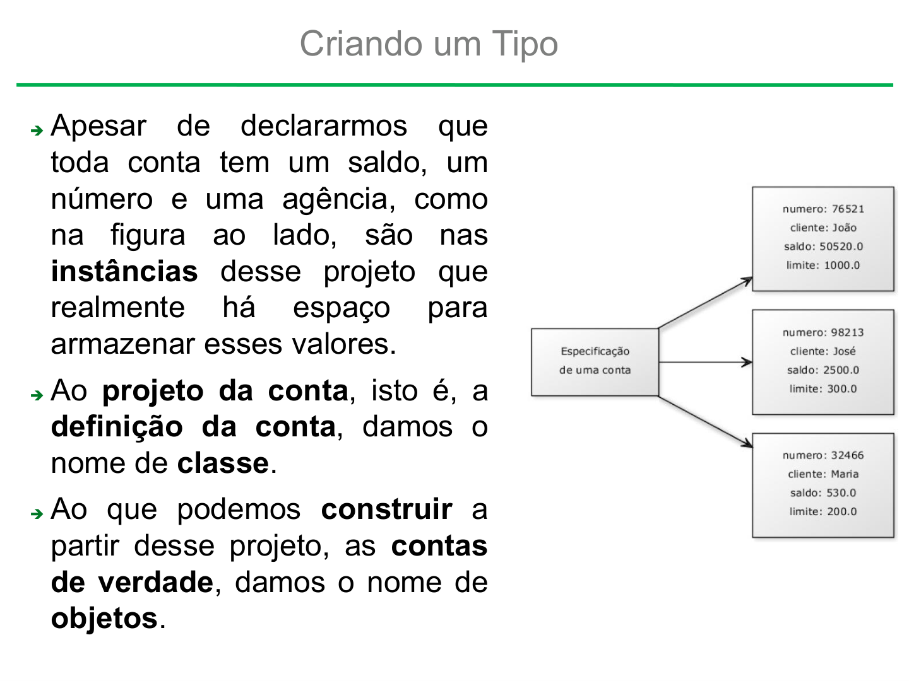
Criando um Tipo
➔Apesar de declararmos que toda conta tem um saldo, um número e uma agência, como na figura ao lado, são nas instâncias desse projeto que realmente há espaço para armazenar esses valores. ➔Ao projeto da conta, isto é, a definição da conta, damos o nome de classe. ➔Ao que podemos construir a partir desse projeto, as contas de verdade, damos o nome de objetos.
Página 33
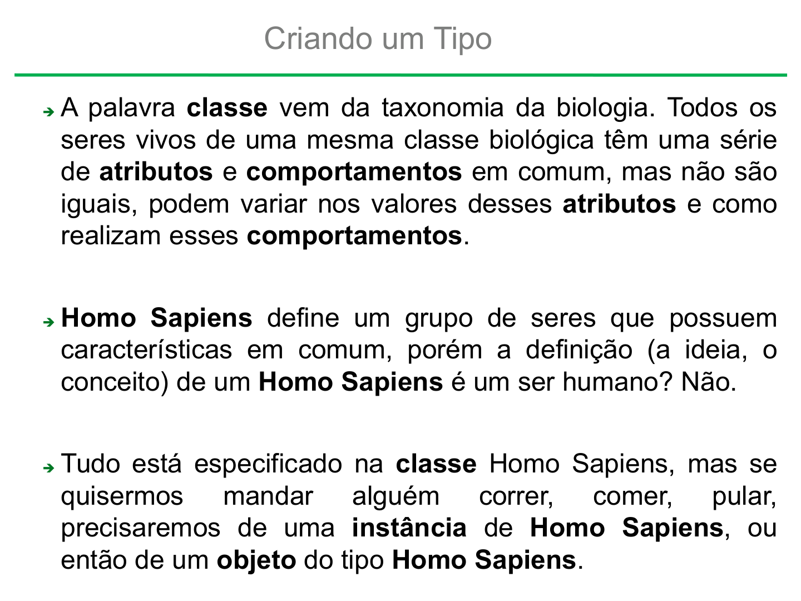
Criando um Tipo
➔A palavra classe vem da taxonomia da biologia. Todos os seres vivos de uma mesma classe biológica têm uma série de atributos e comportamentos em comum, mas não são iguais, podem variar nos valores desses atributos e como realizam esses comportamentos.
➔Homo Sapiens define um grupo de seres que possuem características em comum, porém a definição (a ideia, o conceito) de um Homo Sapiens é um ser humano? Não.
➔Tudo está especificado na classe Homo Sapiens, mas se quisermos mandar alguém correr, comer, pular, precisaremos de uma instância de Homo Sapiens, ou então de um objeto do tipo Homo Sapiens.
Página 34
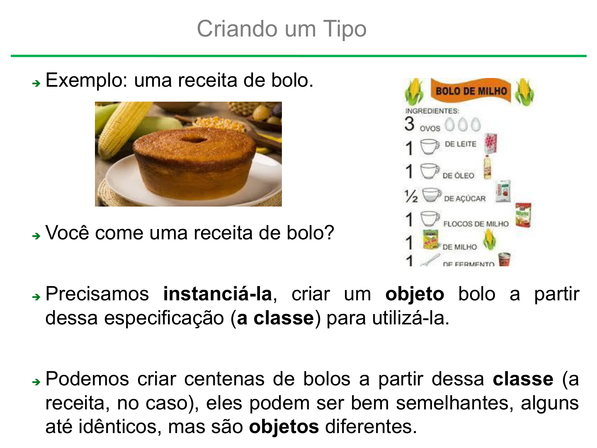
Criando um Tipo
➔Exemplo: uma receita de bolo.
➔Você come uma receita de bolo?
➔Precisamos instanciá-la, criar um objeto bolo a partir dessa especificação (a classe) para utilizá-la.
➔Podemos criar centenas de bolos a partir dessa classe (a receita, no caso), eles podem ser bem semelhantes, alguns até idênticos, mas são objetos diferentes.
Página 35
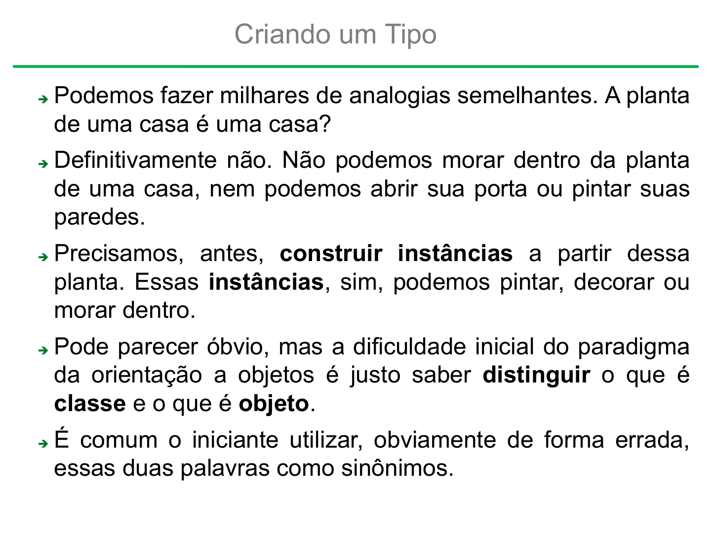
Criando um Tipo
➔Podemos fazer milhares de analogias semelhantes. A planta de uma casa é uma casa? ➔Definitivamente não. Não podemos morar dentro da planta de uma casa, nem podemos abrir sua porta ou pintar suas paredes. ➔Precisamos, antes, construir instâncias a partir dessa planta. Essas instâncias, sim, podemos pintar, decorar ou morar dentro. ➔Pode parecer óbvio, mas a dificuldade inicial do paradigma da orientação a objetos é justo saber distinguir o que é classe e o que é objeto. ➔É comum o iniciante utilizar, obviamente de forma errada, essas duas palavras como sinônimos.
Página 36
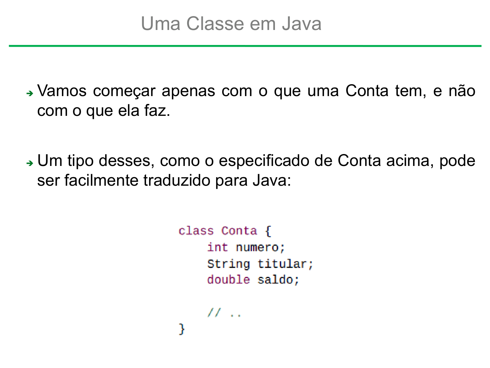
Uma Classe em Java
➔Vamos começar apenas com o que uma Conta tem, e não com o que ela faz.
➔Um tipo desses, como o especificado de Conta acima, pode ser facilmente traduzido para Java:
Página 37
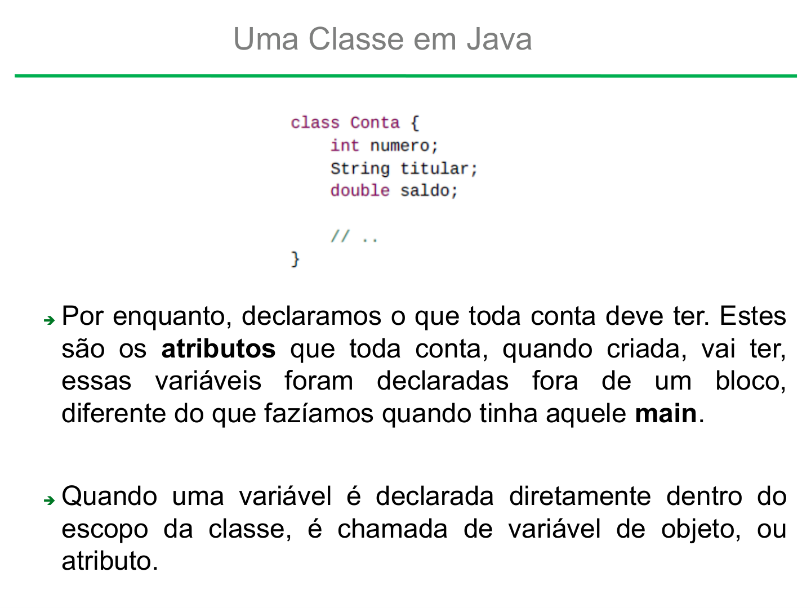
Uma Classe em Java
➔Por enquanto, declaramos o que toda conta deve ter. Estes são os atributos que toda conta, quando criada, vai ter, essas variáveis foram declaradas fora de um bloco, diferente do que fazíamos quando tinha aquele main.
➔Quando uma variável é declarada diretamente dentro do escopo da classe, é chamada de variável de objeto, ou atributo.
Página 38
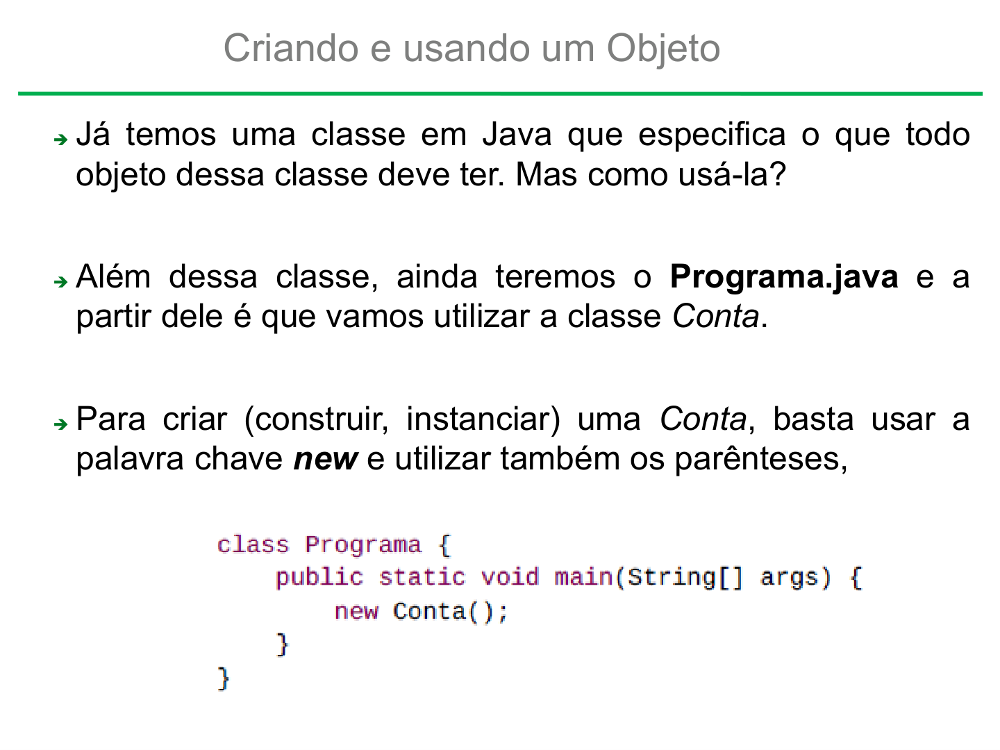
Criando e usando um Objeto
➔Já temos uma classe em Java que especifica o que todo objeto dessa classe deve ter. Mas como usá-la?
➔Além dessa classe, ainda teremos o Programa.java e a partir dele é que vamos utilizar a classe Conta.
➔Para criar (construir, instanciar) uma Conta, basta usar a palavra chave new e utilizar também os parênteses,
Página 39
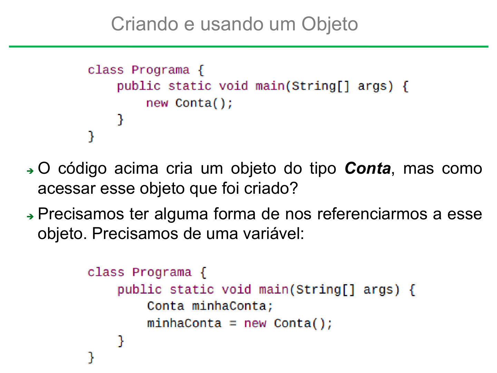
Criando e usando um Objeto
➔O código acima cria um objeto do tipo Conta, mas como acessar esse objeto que foi criado? ➔Precisamos ter alguma forma de nos referenciarmos a esse objeto. Precisamos de uma variável:
Página 40
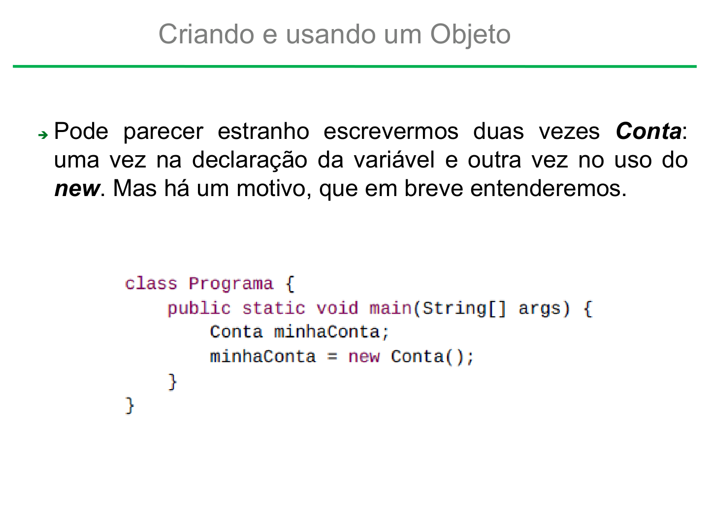
Criando e usando um Objeto
➔Pode parecer estranho escrevermos duas vezes Conta: uma vez na declaração da variável e outra vez no uso do new. Mas há um motivo, que em breve entenderemos.
Página 41
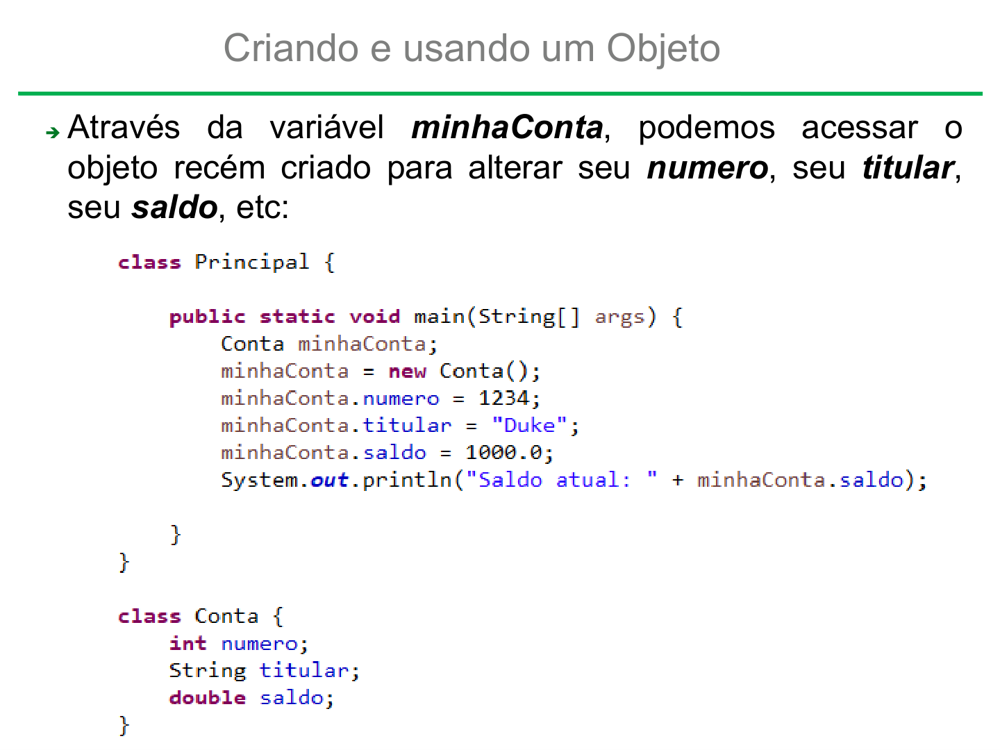
Criando e usando um Objeto
➔Através da variável minhaConta, podemos acessar o objeto recém criado para alterar seu numero, seu titular, seu saldo, etc:
Página 42
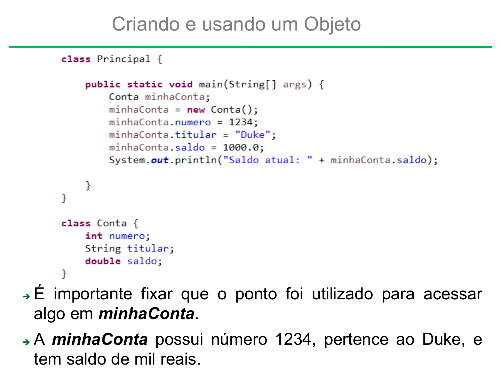
Criando e usando um Objeto
➔É importante fixar que o ponto foi utilizado para acessar algo em minhaConta. ➔A minhaConta possui número 1234, pertence ao Duke, e tem saldo de mil reais.
Página 43
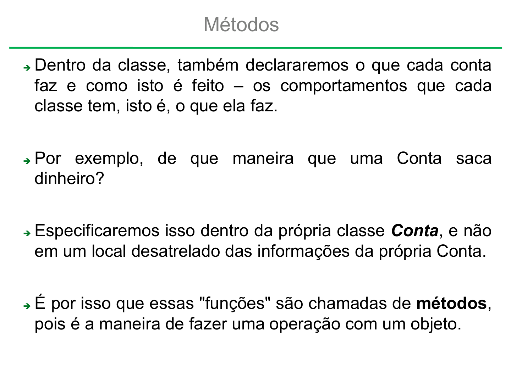
Métodos
➔Dentro da classe, também declararemos o que cada conta faz e como isto é feito – os comportamentos que cada classe tem, isto é, o que ela faz.
➔Por exemplo, de que maneira que uma Conta saca dinheiro?
➔Especificaremos isso dentro da própria classe Conta, e não em um local desatrelado das informações da própria Conta.
➔É por isso que essas “funções” são chamadas de métodos, pois é a maneira de fazer uma operação com um objeto.
Página 44
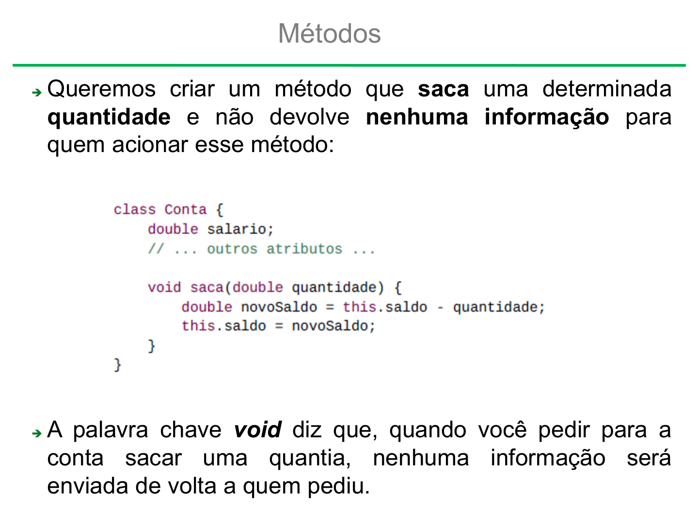
Métodos
➔Queremos criar um método que saca uma determinada quantidade e não devolve nenhuma informação para quem acionar esse método:
➔A palavra chave void diz que, quando você pedir para a conta sacar uma quantia, nenhuma informação será enviada de volta a quem pediu.
Página 45
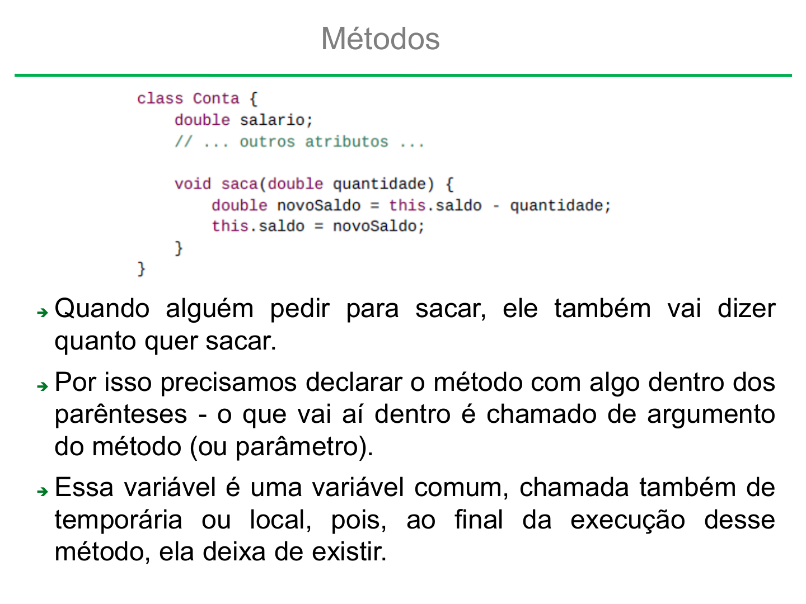
Métodos
➔Quando alguém pedir para sacar, ele também vai dizer quanto quer sacar. ➔Por isso precisamos declarar o método com algo dentro dos parênteses - o que vai aí dentro é chamado de argumento do método (ou parâmetro). ➔Essa variável é uma variável comum, chamada também de temporária ou local, pois, ao final da execução desse método, ela deixa de existir.
Página 46
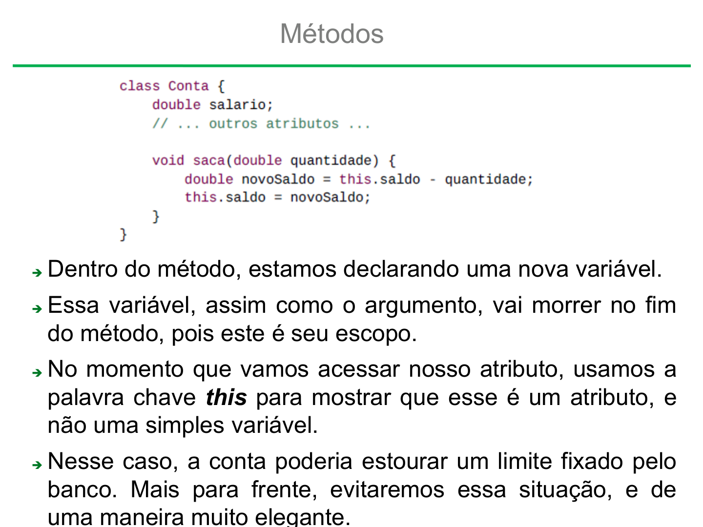
Métodos
➔Dentro do método, estamos declarando uma nova variável. ➔Essa variável, assim como o argumento, vai morrer no fim do método, pois este é seu escopo. ➔No momento que vamos acessar nosso atributo, usamos a palavra chave this para mostrar que esse é um atributo, e não uma simples variável. ➔Nesse caso, a conta poderia estourar um limite fixado pelo banco. Mais para frente, evitaremos essa situação, e de uma maneira muito elegante.
Página 47
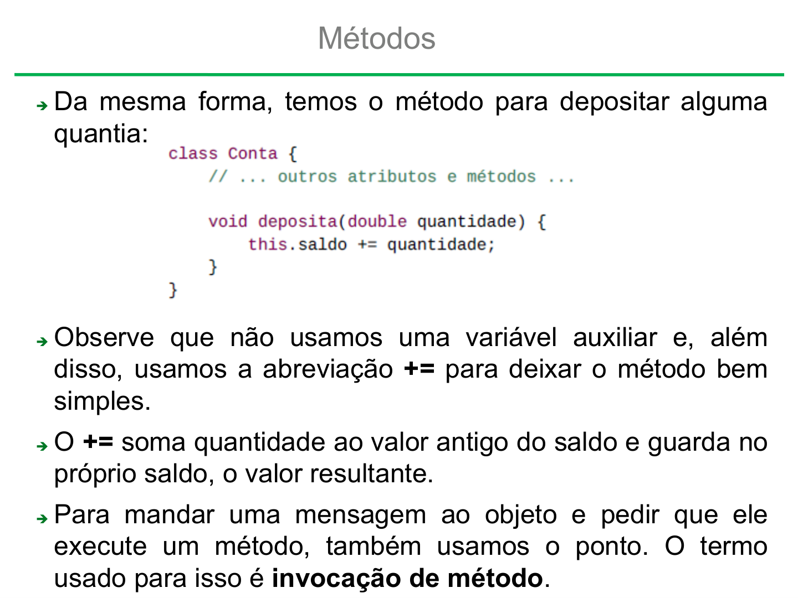
Métodos
➔Da mesma forma, temos o método para depositar alguma quantia:
➔Observe que não usamos uma variável auxiliar e, além disso, usamos a abreviação += para deixar o método bem simples. ➔O += soma quantidade ao valor antigo do saldo e guarda no próprio saldo, o valor resultante. ➔Para mandar uma mensagem ao objeto e pedir que ele execute um método, também usamos o ponto. O termo usado para isso é invocação de método.
Página 48
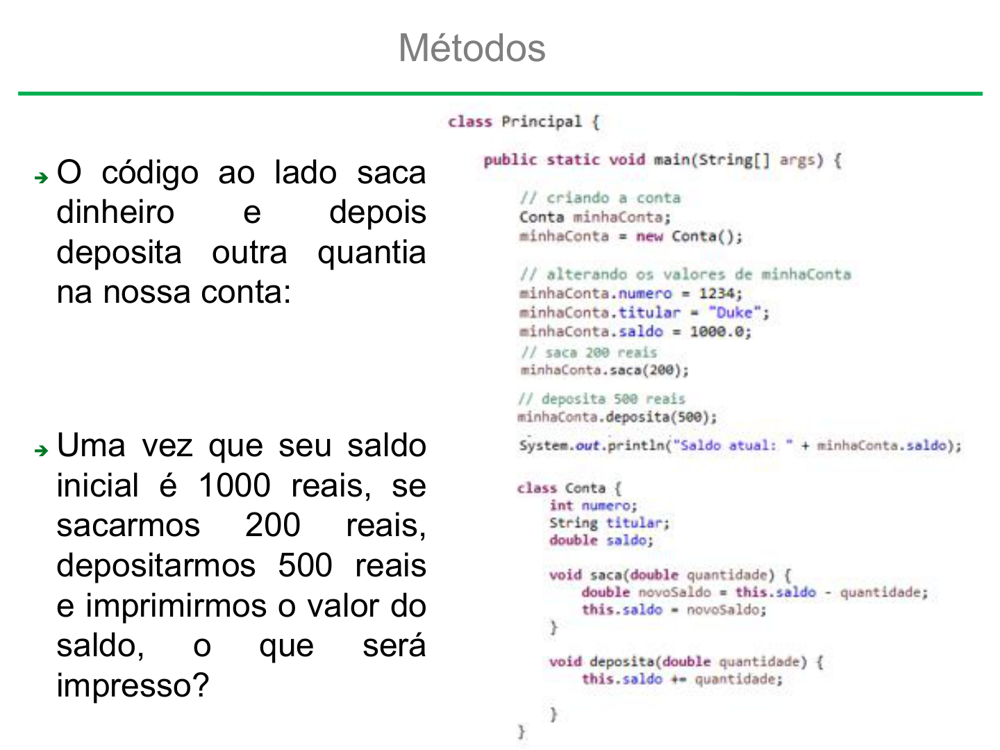
Métodos
➔O código ao lado saca dinheiro e depois deposita outra quantia na nossa conta:
➔Uma vez que seu saldo inicial é 1000 reais, se sacarmos 200 reais, depositarmos 500 reais e imprimirmos o valor do saldo, o que será impresso?
Página 49
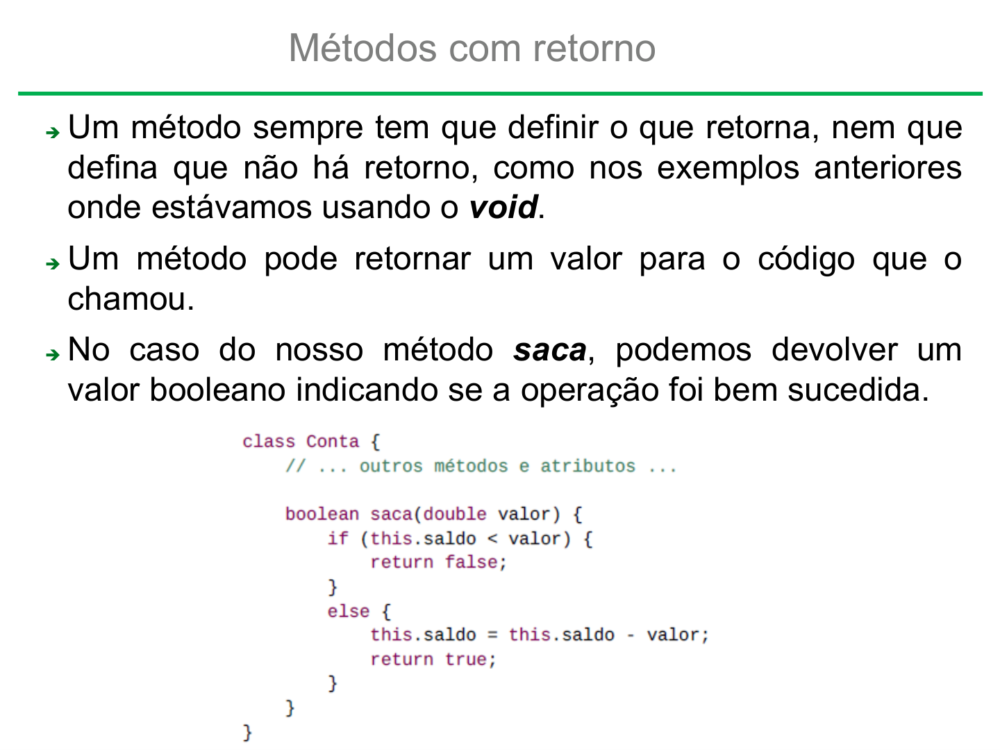
Métodos com retorno
➔Um método sempre tem que definir o que retorna, nem que defina que não há retorno, como nos exemplos anteriores onde estávamos usando o void. ➔Um método pode retornar um valor para o código que o chamou. ➔No caso do nosso método saca, podemos devolver um valor booleano indicando se a operação foi bem sucedida.
Página 50
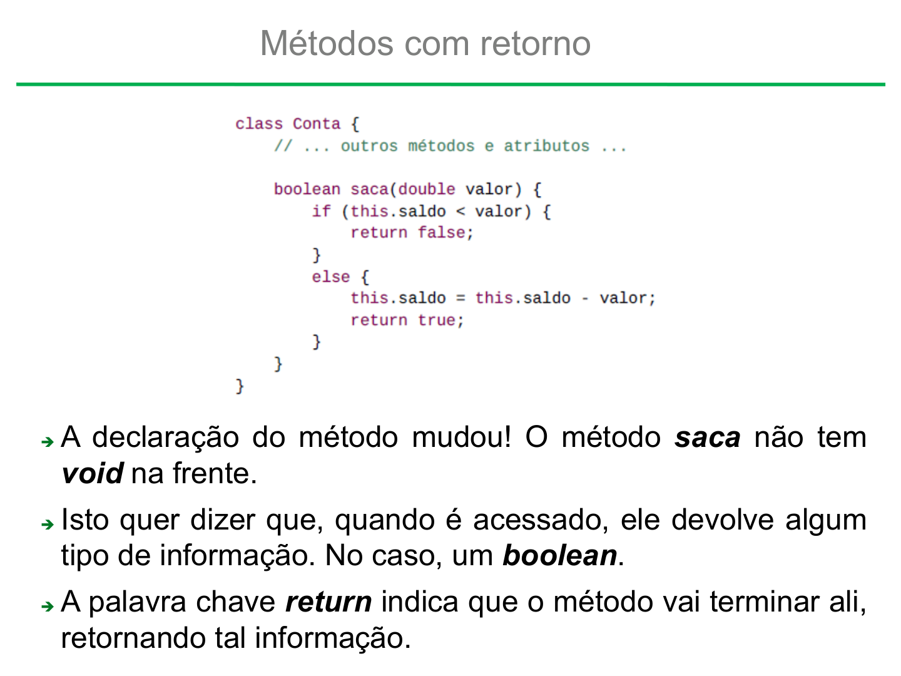
Métodos com retorno
➔A declaração do método mudou! O método saca não tem void na frente. ➔Isto quer dizer que, quando é acessado, ele devolve algum tipo de informação. No caso, um boolean. ➔A palavra chave return indica que o método vai terminar ali, retornando tal informação.
Página 51
Métodos com retorno
➔Exemplo de uso:
Página 52
Métodos com retorno
➔Ou então, posso eliminar
a variável temporária, se
desejado:Página 53
Métodos com retorno
➔Mais adiante, veremos que algumas vezes é mais interessante lançar uma exceção (exception) nesses casos.
➔Meu programa pode manter na memória não apenas uma conta, como mais de uma:
Página 54
Exercício
➔1. Escreva uma classe para representar uma lâmpada que está à venda em um supermercado. ➔2. Crie uma classe Livro que represente os dados básicos de um livro, sem se preocupar com a sua finalidade. ➔3. Usando o resultado do exercício anterior como base, crie uma classe “LivroDeLivraria” que represente os dados básicos de um livro que está à venda em uma livraria. ➔4. Usando o resultado do modelo “Livro” como base, crie uma classe “LivroDeBiblioteca” que represente os dados básicos de um livro de uma biblioteca, que pode ser emprestado a leitores. ➔5. Cria uma classe para representar uma conta corrente que possui um número, um saldo, um status que informa se ela é especial ou não, um limite. ➔6. Crie uma classe que represente um contato da agenda do seu celular.
Página 55
Dúvidas
alana.neo@ifms.edu.br